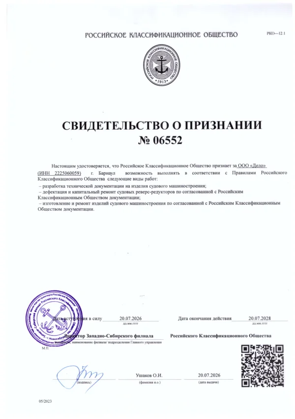

Судовые реверс-редукторы и запасные части к ним
Изготовление, капитальный ремонт и подбор деталей по заводским каталогам. Выберите редуктор: откроется схема и перечень деталей.
Редукторы
Запасные части
Поиск по обозначению или названию во всех каталогах. Обозначение можно вводить с дефисами или без.
Услуги
Ремонт судовых реверс-редукторов
Дефектация и капитальный ремонт по документации, согласованной с Российским Классификационным Обществом.
Ремонт рулевых машин РГ-0,25
Ремонт и замена изношенных деталей.
Изготовление деталей
Изготовление и ремонт изделий судового машиностроения по согласованной с РКО документации.
Техническая документация
Разработка технической документации на изделия судового машиностроения.
Техническая поддержка
Подбор деталей по обозначению и исполнению редуктора, консультации по эксплуатации.
Обсудить ремонт: +7 960 966-55-77, sudosnab_delo@mail.ru
Техническая документация
- Свидетельство о признании РКО № 06552ООО «Дело» · 20.07.2026–20.07.2028 · PDF, 273 КБ
- Руководство по эксплуатации РР-300.РЭРеверс-редуктор РР-300 · 24 с. · PDF, 3,6 МБ
- Каталог деталей РР-30026 сборочных узлов с чертежами и перечнями позиций, на сайте
Реквизиты
| Наименование | Общество с ограниченной ответственностью «Дело» |
|---|---|
| ИНН / КПП | 2225060059 / 222501001 |
| ОГРН | 1032202271309 |
| Адрес | 656609, Алтайский край, г. Барнаул, р.п. Южный, ул. Зоотехническая, 24 |
| Банк | Банк ГПБ (АО), г. Москва, БИК 044525823 |
| Р/с | 40702810200000030619 |
| К/с | 30101810200000000823 |

Российское Классификационное Общество
Свидетельство о признании № 06552
Выдано 20.07.2026Действует до 20.07.2028
ООО «Дело» признано РКО на:
- разработку технической документации на изделия судового машиностроения;
- дефектацию и капитальный ремонт судовых реверс-редукторов;
- изготовление и ремонт изделий судового машиностроения.
Как заказать
Найдите деталь
Откройте редуктор, выберите узел на схеме и добавьте позиции в заявку.
Отправьте заявку
Письмом на sudosnab_delo@mail.ru или назовите обозначения по телефону.
Сверка и счёт
Сверим обозначения с исполнением вашего редуктора, сообщим наличие, цену и срок. Счёт выставляет ООО «Дело».
Принимаем приглашения к участию в закупках.